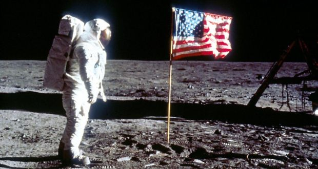

Welcome to the
Apollo 11 Lunar Landing

Apollo 11 (July 16-24, 1969) was the spaceflight that first landed humans on the Moon.
Commander
Neil Armstrong and lunar module pilot Buzz Aldrin formed the American crew that
landed the Apollo Lunar
Module
Eagle on July 20, 1969, at 20:17 UTC. Armstrong became the first person to step onto the lunar
surface
six
hours and 39 minutes later on July 21 at 02:56 UTC; Aldrin joined him 19 minutes later. They spent
about two
and a quarter hours together outside the spacecraft, and collected 47.5 pounds (21.5 kg) of
lunar
material
to bring back to Earth.
Command module pilot Michael
Collins flew the Command Module Columbia alone
in
lunar
orbit while they were on the Moon's surface. Armstrong and Aldrin spent 21 hours, 36 minutes on
the
lunar
surface, at a site they had named Tranquility Base upon landing, before lifting off to rejoin
Columbia
in
lunar orbit.
Apollo 11 was launched by a Saturn V rocket from Kennedy Space Center on Merritt Island, Florida, on July 16 at 13:32 UTC, and it was the fifth crewed mission of NASA's Apollo program. The Apollo spacecraft had three parts: a command module (CM) with a cabin for the three astronauts, the only part that returned to Earth; a service module (SM), which supported the command module with propulsion, electrical power, oxygen, and water; and a lunar module (LM) that had two stages—a descent stage for landing on the Moon and an ascent stage to place the astronauts back into lunar orbit.

After being sent to the Moon by the Saturn V's third stage, the astronauts separated the
spacecraft
from
it
and traveled for three days until they entered lunar orbit. Armstrong and Aldrin then moved into
Eagle
and
landed in the Sea Of
Tranquility on July 20. The astronauts used Eagle's ascent stage to lift off
from
the
lunar surface and rejoin Collins in the command module. They jettisoned Eagle before they
performed
the
maneuvers that propelled Columbia out of the last of its 30 lunar orbits onto a trajectory back
to
Earth.
They returned to Earth and splashed down in the Pacific Ocean on July 24 after more than eight
days
in
space.
Armstrong's first step onto the lunar surface was broadcast on live TV to a worldwide audience.
He
described
the event as "one small step for man, one giant leap for mankind." Apollo 11 effectively proved
US victory in the Space Race to demonstrate spaceflight superiority, by fulfilling a national
goal
proposed
in 1961 by President John F. Kennedy, "I believe
this Nation should commit
itself to achieving the goal, before this decade is out, of landing a man on the Moon and
returning him safely to the Earth."